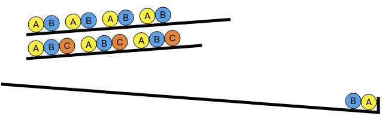

Perles colorées
Cliquez sur les boutons pour faire tomber des perles une par une jusqu'à atteindre l'objectif.
Cliquez sur les boutons pour faire tomber des perles une par une jusqu'à atteindre l'objectif.
Il faut commencer par faire tomber une bille A et une bille B. Si l'on prend ces billes sur la première ligne, alors on se retrouve coincé, car on n'a pas de bille C à disposition pour continuer.
Il faut donc commencer par prendre les billes A et B sur la seconde ligne. On peut alors prendre la bille C qui se trouve également sur la seconde ligne.

Ensuite, pour terminer le premier groupe de 5 billes de l'objectif, il reste à prendre deux billes A et B, que l'on peut prendre sur la première ligne.

En résumé, une solution consiste à cliquer sur les boutons 2, 2, 2, 1, 1, en répétant cette séquence 3 fois en tout.
Il y avait également une autre solution : 2, 2, 2, 2, 2, 1, 1, 2, 2, 2, 1, 1, 2, 1, 1.
L'objectif est constitué de 3 groupes identiques, chacun formé de la même séquence de 6 billes, avec un A, un B, deux C, un D, et un E. On peut justement trouver ces 6 billes en prenant les 3 premières billes de la ligne 2 et les 3 premières billes de la ligne 3.
Il faut faire attention à faire tomber ces billes dans le bon ordre pour ne pas être coincé. Après le A et le B, il faut choisir de faire tomber le C de la ligne 3, afin de débloquer un D dont on a besoin juste après.

Ensuite, pour terminer le premier groupe de 6 billes de l'objectif, il reste à prendre deux billes D, C et E restantes sur les lignes 2 et 3.

En résumé, une solution consiste à cliquer sur les boutons 2, 2, 3, 3, 2, 3, en répétant cette séquence 3 fois en tout.
Il y avait également une autre solution : 1, 1, 3, 3, 1, 3, 2, 2, 3, 3, 2, 3, 2, 2, 3, 3, 2, 3.
L'objectif est constitué de 2 groupes identiques, chacun formé de la même séquence de 7 billes A, puis 2 billes B, puis 3 billes C.
Pour faire tomber 3 billes C à la suite, il faut avoir débloqué ces billes sur 3 lignes différentes. Ces 3 lignes doivent contenir en tout 2 billes B. Cela signifie qu'il faut forcément utiliser une ligne ne contenant pas de B. Il n'y a que la ligne 5 qui convient pour cela.
Pour déterminer les deux autres lignes à utiliser, il faut trouver où prendre les 7 billes A. Sachant que la ligne 5 va nous fournir 3 billes A, il reste donc 4 billes A à faire tomber en provenance de deux autres lignes. Il n'y a qu'une seule solution pour cela, c'est d'utiliser les lignes 1 et 3.
En résumé, on commence par faire tomber toutes les billes A en tête des lignes 1, 3 et 5.

Puis, on fait tomber les billes B des lignes 1 et 3.

Enfin, on fait tomber les billes C des lignes 1, 3, et 5.

Au final, la solution consiste à cliquer sur les boutons : 1, 1, 3, 3, 5, 5, 5, 1, 3, 1, 3, 5, et de répéter cette séquence 2 fois en tout.